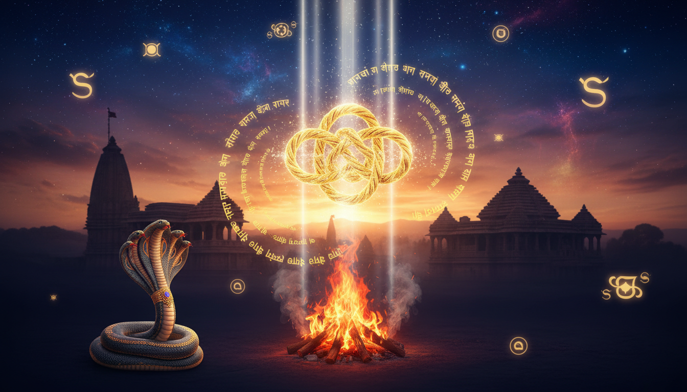

हिंदू धर्म दर्शन में विवाह की पवित्रता और वंश की निरंतरता (वंश-वृद्धि) को 'बंध' की रक्षा के लिए अनिवार्य माना गया है। शास्त्रों के अनुसार, ज्येष्ठ पुत्र को 'कर्म पुत्र' कहा जाता है, जिसे मृत्यु के पश्चात मुखाग्नि देने और श्राद्ध कर्म द्वारा पितरों की मुक्ति सुनिश्चित करने का एकमात्र अधिकार प्राप्त है। 'अपुत्रस्य गतिं नास्ति' की अवधारणा इसी महत्व को रेखांकित करती है।

अक्सर देखा जाता है कि कई जोड़े चिकित्सकीय रूप से पूर्णतः स्वस्थ होने के बावजूद संतान सुख से वंचित रह जाते हैं। एक अनुभवी ज्योतिषी के रूप में, मैं इसे केवल शारीरिक समस्या नहीं, बल्कि 'प्रारब्ध' का अवरोध मानता हूँ। भगवान श्री कृष्ण ने श्रीमद्भगवद्गीता में स्पष्ट किया है— "तस्माच्छास्त्रं प्रमाणं ते कार्याकार्यव्यवस्थितौ", अर्थात कर्तव्य और अकर्तव्य के निर्धारण में शास्त्र ही अंतिम प्रमाण हैं। महर्षि पराशर के 'बृहत पराशर होरा शास्त्र' (अध्याय 84) के अनुसार, संतानहीनता का मूल कारण पूर्वजन्म के संचित पापों से उत्पन्न 'श्राप' (Shrapa) होते हैं।
ज्योतिषीय विश्लेषण: श्राप और कार्मिक निदान पद्धति
ज्योतिष शास्त्र में 'श्राप' आत्मा पर लगा एक तीव्र ऊर्जात्मक भार या 'विभ्रंश' है। यह पूर्वजन्म में किसी जीव को दिए गए क्रोध (मंगल), दुख (शनि) या गहरे आघात (राहु) का परिणाम होता है।
कार्मिक बनाम शारीरिक बाधा: अरूढ़ पद (Arudha Padas) का रहस्य
एक कुशल ज्योतिषी के लिए यह जानना आवश्यक है कि बाधा चिकित्सा विज्ञान से दूर होगी या केवल आध्यात्मिक शांति से। इसके लिए हम 'देह पद्धति' (Jaimini/Parashara Method) का उपयोग करते हैं: 1. शारीरिक निदान: लग्न से तृतीय और नवम भाव के अरूढ़ पद (A3 और A9) का विश्लेषण करें। यदि यहाँ पीड़ा है, तो बाधा शारीरिक/एनाटॉमिकल है जिसे आधुनिक चिकित्सा से ठीक किया जा सकता है। 2. कार्मिक निदान: सूर्य (आत्मकारक) से गणना किए गए अरूढ़ पद (AS3 और AS9) का विश्लेषण करें। यदि सूर्य इन पदों से 2, 6, 8 या 12वें भाव में स्थित है, तो यह 'शुद्ध कार्मिक अवरोध' है। ऐसी स्थिति में केवल वैदिक शांति विधान ही काम करते हैं।
ग्रहों की भूमिका और 'वक्री' (Retrograde) प्रभाव
- शनि: यह जातक द्वारा किए गए मूल पाप (Papa) का प्रतिनिधित्व करता है।
- राहु-केतु: यह कार्मिक अक्ष है। यदि श्राप देने वाला ग्रह वक्री (Retrograde) है, तो वह एक 'अमोघ कार्मिक गांठ' (Unyielding Knot) बन जाता है। ऐसी स्थिति में सामान्य उपाय तब तक फलित नहीं होते जब तक जातक उस ग्रह की 'मूल दशा' को पूर्णतः भोग न ले।
- पाप-कर्तरी: यदि पंचम भाव या पंचमेश दो पाप ग्रहों के बीच फंसा (Hemmed between malefics) हो, तो श्राप की तीव्रता बढ़ जाती है।
आठ प्रमुख पूर्वजन्म श्राप और उनके शास्त्रीय लक्षण
महर्षि पराशर ने आठ प्रकार के श्रापों का वर्णन किया है जो संतान (पुत्र-अक्षय योग) का विनाश करते हैं। नीचे दी गई तालिका इन विशिष्ट योगों को स्पष्ट करती है:
| श्राप का प्रकार | मुख्य कारक (Karaka) | ज्योतिषीय संयोजन (Planetary Combinations) | वर्तमान जीवन के लक्षण |
|---|---|---|---|
| सर्पश्राप | राहु | पंचम में राहु हो और मंगल की दृष्टि हो, या पंचमेश राहु के साथ हो और चंद्रमा शनि से दृष्ट हो। | संतान की अकाल मृत्यु, सर्पों का भय, बार-बार गर्भपात। |
| पितृश्राप | सूर्य | सूर्य तुला (नीच) राशि में पंचम भाव में हो, शनि के नवमांश में हो और पाप-कर्तरी योग में हो। | पिता से संपत्ति विवाद, पितृ ऋण, वंश का अचानक रुक जाना। |
| मातृश्राप | चंद्रमा | चंद्रमा पंचमेश होकर नीच का हो, शनि 11वें भाव में हो और 4था भाव पाप ग्रहों से पीड़ित हो। | मानसिक अशांति, माता का शीघ्र वियोग, संपत्ति की हानि। |
| भ्रातृश्राप | मंगल | तृतीयेश, मंगल और राहु के साथ पंचम में हो, लग्नेश और पंचमेश 8वें भाव में स्थित हों। | भाइयों से शत्रुता, भूमि विवाद, पुत्र का सुख न मिलना। |
| मातुलश्राप | बुध | बुध, गुरु, मंगल और राहु पंचम भाव में हों और शनि लग्न में स्थित हो। | मामा द्वारा विश्वासघात, त्वचा रोग, संतानहीनता। |
| ब्रह्मश्राप | बृहस्पति | राहु धनु/मीन राशि में हो, गुरु-मंगल-शनि पंचम में हों और नवमेश 8वें भाव में हो। | दुर्भाग्य, विद्या में असफलता, गुरुजनों का अनादर। |
| पत्नीश्राप | शुक्र | सप्तमेश पंचम भाव में हो, शनि सप्तमेश के नवमांश में हो और पंचमेश 8वें भाव में हो। | वैवाहिक क्लेश, पत्नी की हानि, महिलाओं द्वारा सार्वजनिक अपमान। |
| प्रेतश्राप | शनि | शनि और सूर्य पंचम में, क्षीण चंद्रमा 7वें में और राहु-गुरु लग्न या 12वें भाव में हों। | कुल में अकाल मृत्यु, मानसिक व्याधियां, अतृप्त आत्माओं का प्रभाव। |
मानसिक और व्यवहारिक संकेत: बुध और केतु की भूमिका
पिछले जन्मों की स्मृतियों और 'संज्ञानात्मक छापों' (Cognitive Imprints) को संचित करने में बुध की भूमिका मुख्य है। * बुध का प्रभाव: यदि बुध पीड़ित है, तो जातक अपनी संचित प्रतिभाओं को खो देता है। उदाहरण के लिए, मिथुन राशि (7वें भाव) में पीड़ित बुध पिछले जन्म में भाई-बहनों द्वारा किए गए विश्वासघात के कारण वर्तमान जीवन में 'गहन अविश्वास' और वैवाहिक अलगाव पैदा करता है। वृषभ लग्न में पीड़ित बुध परिवार पर धन खर्च करने में 'अकारण चिंता' पैदा करता है, जो पिछले जन्म में हुए धन-अपहरण की स्मृति है। * केतु का संकेत: केतु की स्थिति पिछले जन्म के चरित्र को उजागर करती है: * मेष/प्रथम भाव में केतु: अहंकारी योद्धा का अतीत, जो वर्तमान में आवेग और क्रोध देता है। * सिंह/पंचम भाव में केतु: प्रभुत्व जमाना वाला निर्माता, जिसे वर्तमान में संतान और रोमांस से विरक्ति रहती है। * वृश्चिक/अष्टम भाव में केतु: गुप्त विधाओं का ज्ञाता जिसने पूर्व में आघात सहा हो।
शांति विधान: कार्मिक दोषों के अचूक वैदिक उपाय
इन बाधाओं को दूर करने के लिए 'कर्म विपाक संहिता' और 'होरा शास्त्र' में विशिष्ट शांति विधि वर्णित है।
हवन और मंत्र चिकित्सा (Mantra & Havan Matrix)
प्रत्येक ग्रह के लिए विशिष्ट समिधा (लकड़ी) और मिश्रण का प्रयोग अग्नि यज्ञ में किया जाना चाहिए:
| ग्रह | जप संख्या | हवन समिधा (शहद, दही, घी मिश्रित) | विशेष दान |
|---|---|---|---|
| सूर्य | 7,000 | आक (Arka) की लकड़ी | सवत्सा स्वस्थ गाय (गाय और बछड़ा) |
| चंद्रमा | 11,000 | पलाश (Palash) की लकड़ी | सफेद शंख (Shankha) |
| मंगल | 11,000 | खैर (Khadira) की लकड़ी | बलिष्ठ बैल (Bullock) |
| बुध | 9,000 | अपामार्ग (Apamarga) की लकड़ी | शुद्ध स्वर्ण (Gold) |
| बृहस्पति | 19,000 | पीपल (Pippala) की लकड़ी | पीले रेशमी वस्त्र |
| शुक्र | 16,000 | गूलर (Oudumbara) की लकड़ी | स्वस्थ घोड़ा |
| शनि | 23,000 | शमी (Shami) की लकड़ी | काली गाय |
| राहु | 10,000 | दूर्वा (Durva) घास | लोहे के अस्त्र-शस्त्र |
| केतु | 17,000 | कुश (Dharba) घास | स्वस्थ बकरी |
विशिष्ट शास्त्रीय अनुष्ठान और गुप्त उपाय
- सर्पश्राप: शुद्ध स्वर्ण का नागराज बनवाकर पूजन करें और भूमि दान करें।
- मातृश्राप: सेतुबंध (रामेश्वरम) में समुद्र स्नान, 1 लाख गायत्री जप और पीपल वृक्ष की 1008 परिक्रमा अनिवार्य है।
- ब्रह्मश्राप: 'ब्रह्मकृच्छ साधना' (3 बार) संपन्न करें और पंच-रत्न दान करें।
- विशिष्ट नक्षत्र उपाय: यदि बाधा पूर्वाषाढ़ा नक्षत्र के कारण है, तो 13 दिनों तक उपवास रखते हुए 'देवी सूक्तम' का पाठ करें।
- बुध-राहु (अष्टम भाव) विशेष उपाय: मधुमक्खियों को शुद्ध जल अर्पित करें और उनके छत्ते वाले वृक्ष के नीचे प्रार्थना करें।
परिहार स्थल: भारत के शक्तिशाली तीर्थ और उनके रहस्य
गहरे कार्मिक दोषों के निवारण के लिए विशिष्ट भौगोलिक ऊर्जा केंद्रों की यात्रा आवश्यक है:
- रामेश्वरम (तमिलनाडु): पितृ, मातृ और मातुल श्राप के लिए। यहाँ 22 पवित्र कुओं के जल से क्रमिक स्नान का विधान है।
- तिरुनागेश्वरम (तमिलनाडु): यहाँ 'राहु काल अभिषेक' के दौरान राहु की मूर्ति पर चढ़ाया गया दूध नीला (Blue) हो जाता है, जो जातक के कार्मिक विष के अवशोषण का प्रतीक है।
- गया (बिहार): प्रेत श्राप और पितृ दोष की पूर्ण मुक्ति हेतु विष्णुपद पर पिंडदान।
- कुक्के सुब्रमण्य (कर्नाटक): सर्पश्राप के लिए 'आश्लेषा बलि' और 'सर्प संस्कार' का सर्वाधिक शक्तिशाली केंद्र।
- त्रयंबकेश्वर (महाराष्ट्र): अतृप्त पूर्वजों की मुक्ति हेतु 'नारायण नागबलि' (बहु-दिवसीय अनुष्ठान) के लिए प्रसिद्ध।
- तिरुवल्लई (चेन्नई): ब्रह्मश्राप और गुरु दोष निवारण के लिए यहाँ गुरु भगवान की आराधना की जाती है।
- पादलेश्वर मंदिर (कुड्डालोर): यहाँ सोमवार को 'पूर्व जन्म पाप परिहार पूजा' करने से संचित पापों का क्षय होता है।
निष्कर्ष: समाधान और आध्यात्मिक जीवन की ओर कदम
ज्योतिषीय दृष्टिकोण से ये श्राप केवल दंड नहीं, बल्कि आत्मा के संतुलन का अवसर हैं। संतान सुख में बाधा एक संकेत है कि हमारे सूक्ष्म शरीर में 'कार्मिक ग्रंथियां' (Karmic Knots) उलझी हुई हैं। इन बाधाओं का अंतिम समाधान सात्विक जीवन, वृद्धों की सेवा और जीव मात्र के प्रति करुणा में निहित है।
यदि आप इन चुनौतियों का सामना कर रहे हैं, तो एक विद्वान ज्योतिषी से अपनी कुंडली के 'अरूढ़ पदों' और 'वक्री ग्रहों' का विश्लेषण कराएं। श्रद्धा और शुद्ध अंतःकरण से किया गया 'प्रायश्चित कर्म' प्रारब्ध की कठोर रेखाओं को भी बदलने की सामर्थ्य रखता है। सही उपाय और दैवीय कृपा से वंश की निरंतरता निश्चित रूप से संभव है।
Sources
NotebookLM notebook: 8a6dac11-fdc2-4406-9a55-ca593bfdeba6
- Timing Curses and their Remedies (1) - Sarbani Rath
- Curses and Past-Life Karma in Vedic Astrology as per Karm Vipak Samhita - astrosutras.in
- Hindu Curses and Ritual Remedies | PDF - Scribd
- CHILDLESSNESS PRINCIPAL AND REMEDY - Asttrolok
- Brihat Parashara Hora Sashtra by Rishi Parashara | PDF | Curse | Sun - Scribd
- Curses and Childlessness in Astrology | PDF | Hindu Literature - Scribd
- Pitru Dosha or Purva Janma Shrapa as per Brihat Parashara Hora Shastra
- How to understand Curse (श्राप) by Astrology along with some interesting stories : ' Your Bad Karma Set the Cause of Curse ' - Sharad Kumar Soni The 'Brihat Parashara Hora Shastra' which is one of the most respected astrological treatises gives a
- Past Life Curses in Current Horoscope | PDF | Reincarnation | Karma - Scribd
- Remedies for Vedic Astrology Doshas | PDF - Scribd
- Poorva Janma Dosha Pariharam Temple Thirupathiripuliyur | Parihara Pooja
- This temple in South India is said to reverse bad karma; know how | - The Times of India
- Thiruvalithayam Temple: Where Curses Are Lifted and Divine Grace Prevails - Astro Ulagam
- Thiruvallam Sri Parasurama Swamy Temple | Sithars Astrology
- 6 Temples in South India believed to remove curses, karma and doshas - The Times of India
- Curses of Forefathers (Pitra Dosha) - Astrological Implications - The Times of India
- Remedies from Brihat Parashara Hora | PDF | Planets | Astrology - Scribd
- Yearlong Karma & Planetary Affliction Removal Program - AstroVed
- Memories of Past Life - Lunar Astro Vedic Academy
- How Karma Boomerangs In Future— As Seen Through Vedic Astrology | by Yashraj Sharma
- Past life karma from the 5th house and D-9 (Navamsa) - The Times of India
- Past-Life Karma: 5th, 8th and 12th Houses - Paramarsh
- Insights on Past Life through Astrology | PDF - Scribd
- strongest indicators of heavy past-life load(conjunction) : r/Nakshatras - Reddit
- Your Children and Their Karmas | PDF | Planets In Astrology - Scribd
- Deadly Conjunctions: Saturn Ketu - Vedic Akshat
- Astrology Insights on Childbirth | PDF - Scribd
- Progeny Predictions in Jyotish Astrology | PDF - Scribd
- 5th House- Let's Dive Into Past. : r/Nakshatras - Reddit
- Daivik Curses and Nakshatras - - Lunar Astro
- Unlocking Past Life Karmas in Astrology | PDF - Scribd
- Brihat Parashara Hora Shastra Vol 2 PDF | PDF | Hindu Astrology | Sanskrit - Scribd
- Naadi Astrology: 12 Bhavas Explained | PDF - Scribd
- Vedic Remedies for Past Lives #Curses and #Karma Removal by Dr. Navnit J Krishna
- My 3 Books Contents | PDF | Hindu Astrology | Indian Religions - Scribd
- Parental Relationships in Astrology | PDF - Scribd
- Fertility Insights in Jyotish Astrology | PDF | Superstitions | Occult - Scribd
- Full text of "Sanjay Rath Crux Of Vedic Astrology: Timing Of Events ( 1998)" - Internet Archive
- Antidotes to Evils in Astrology | PDF | New Age Practices | Hindu Philosophy - Scribd
- Full text of "Brihat Parashara Hora Shastra" - Internet Archive
- Brihat Parashara Hora Shastra - Bharatpedia
- Medical Astrology: Diagnosis & Remedies | PDF - Scribd
- Medical Astrology Dr. S K Kumar | PDF - Scribd
- Brihat Parashara Hora Shastra Overview | PDF | Hindu Astrology - Scribd
- Maharshi Parasara's Brihat Parasara Hora Sastra - Reliable Astrology.com
- Sun | PDF - Scribd
- Medical Astrology: Diagnosis & Remedies | PDF - Scribd
- How to strengthen the Sun (Surya) without fear-based remedies - The Times of India
- BPHS Budha MahaDasha Vimshottari *BP Lama Jyotishavidya
- BPHS Shukra * Venus Vimshottari Dasha * BP Lama Jyotishavidya
- Some Extraordinary/Special placements. : r/Nakshatras - Reddit